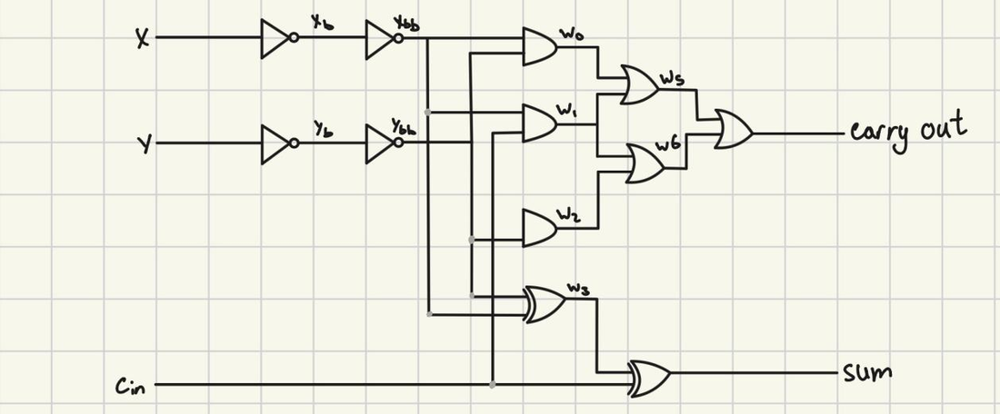
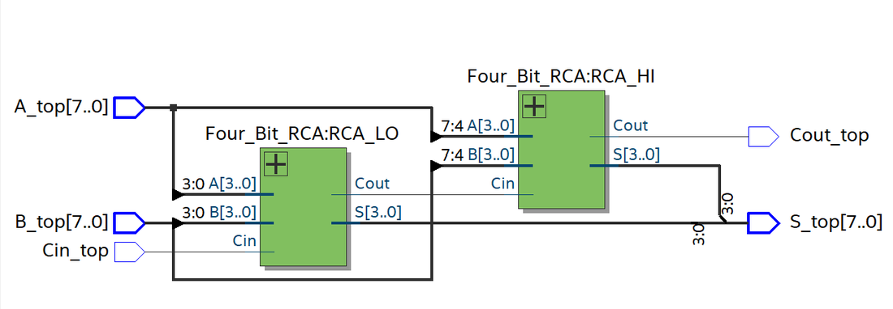
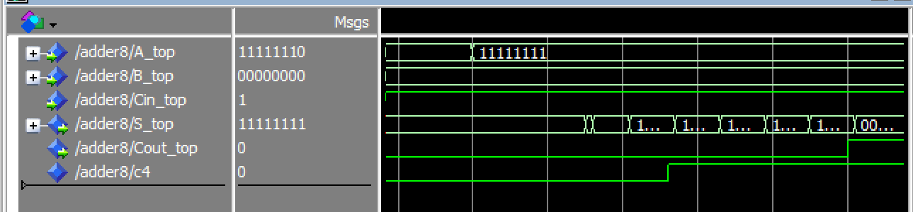
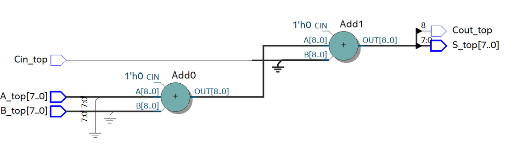

Projects / 8-bit ripple-carry adder
8-bit ripple-carry adder
Digital Circuits and Systems, Lab 8, Oct 2026
An 8-bit adder built in VHDL from single-bit full adders, with a hand analysis of its cost and critical-path delay that I checked in simulation.
- Inputs
- 8-bit A and B, plus a carry-in
- Outputs
- 8-bit sum and a carry-out
- Building block
- A full adder made from 2-input gates and inverters: 12 gates, 20 gate inputs
- Structure
- Two 4-bit ripple-carry blocks chained through the carry
The full adder
The full adder uses only 2-input gates and inverters. Its sum is x ⊕ y ⊕ carry-in, and its carry-out is 1 when at least two of the three inputs are 1.
w0 = x·y w1 = x·cin w2 = y·cin carry_out = w0 + w1 + w2 sum = x ⊕ y ⊕ cin
I scored each design as gates plus gate inputs. One full adder is 12 + 20 = 32, so eight of them cost 8 × 32 = 256.

The 8-bit adder
I chained eight full adders into two 4-bit ripple-carry blocks. The carry out of the lower block feeds the carry in of the upper block, so each stage has to wait for the carry from the stage before it.

Critical-path delay
I gave each gate a delay in the VHDL: 1 ns for an inverter, 2 ns for an AND or OR, and 7 ns for an XOR. The slowest path is the carry rippling from the first stage to the last.
First stage, input to carry-out: 1 + 1 + 2 + 2 + 2 = 8 ns Each later stage, carry-in to carry-out: 2 + 2 + 2 = 6 ns Carry-out of the adder: 8 + 7 × 6 = 50 ns Sum bit 7: 8 + 6 × 6 = 44 ns for the carry into the last stage, plus 7 ns = 51 ns
To test the worst case, I held B at 0 and the carry-in at 1, then changed A from 11111110 to 11111111. That makes the carry travel through all eight stages. The simulation gave 50 ns to the carry-out and 51 ns to the most significant sum bit, matching the hand analysis.

What synthesis does
The delays above exist only in my VHDL model. Quartus ignores them when it synthesizes the design, so the 50 ns figure describes the model and not the timing of real hardware.
I also built the adder with the + operator, which lets Quartus choose how to implement the arithmetic. Its RTL view is two adders instead of two blocks of full adders. Quartus can optimize that version more freely than my gate-by-gate one, so the hand-calculated cost of 256 does not predict what the tools produce.
